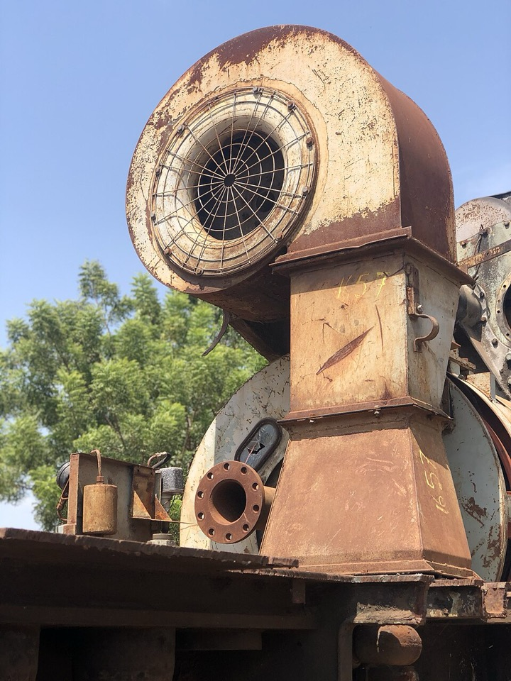
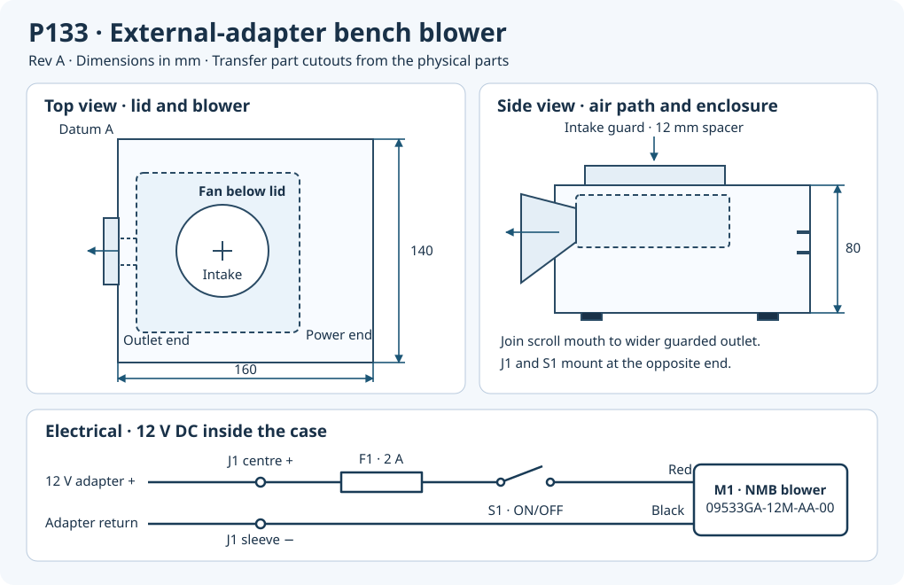

Hand-build a 12 V bench blower
Make a metal housing, fit a guarded centrifugal blower and run it from an external 12 V adapter. Use the first passing case to make a drilling pattern for a second unit.


Photo by Zakali Jia, scaled. Original photograph · CC BY-SA 4.0.

Watch. Follow the cutter setup and workholding before marking your own fan inlet. Malco · HC1/HC2 sheet-metal hole cutter.
Buy the sample parts and lay them out
| Qty and part | What to buy and check | India source and example price |
|---|---|---|
| 1 · M1 centrifugal blower View blower | NMB 09533GA-12M-AA-00, 12 V DC brushless, ball bearings, 1.03 A nominal free-air current, 3,700 rpm and 28.6 CFM free airflow. The motor, windings, bearings, driver, impeller and scroll come assembled. Plan for the 97 × 93.5 × 33 mm outline and two Ø4.5 mm mounting holes in the series drawing. Red is positive and black is negative. | DigiKey India · ₹2,485.22 quote snapshot · NMB · Dimensions and M-class curve · NMB · Family photo. |
| 1 · Adapter and mains cord View adapter | MEAN WELL GST25A12-P1J, isolated external 12 V / 2.08 A. P1J has a 5.5 mm outer, 2.1 mm inner, 11 mm long centre-positive plug. Buy a matching earthed Indian 3-pin to C13 cord for its C14 inlet. Verify the adapter label and local certification for the supplied unit and cord. Use the intact adapter outside the blower case. | element14 India · 2815879 · ₹1,393.53 · MEAN WELL · Adapter specification · Deltacab · C13 cord, ask for a quote · Tanotis · Adapter photo. |
| 1 · J1 panel DC jack View jack | Switchcraft 721AU, 2.1 mm centre pin, 5 A at 24 V DC. Test that the actual adapter plug seats fully and makes firm contact before cutting the panel. If needed to isolate the jack from metal, fit it on a small rigid insulating panel that covers a larger clearance window. Use only the centre and sleeve connections. | element14 India · 4734649 · Switchcraft · Mounting and contacts · DigiKey · Family photo. |
| 1 · S1 toggle switch View switch | NKK MN11SS1W01, maintained SPST ON/OFF, 4 A at 30 V DC for a resistive load. Verify switching duty with NKK against measured startup current and the motor controller input. Use the drawing for the bushing, flat or lock washer, and solder lugs. | DigiKey India · MN11SS1W01 · NKK · DC rating and panel detail. |
| 1 holder + 2 fuses · F1 View holder View fuse | Littelfuse FHAC0001ZXJ covered holder with 0287002.PXCN 2 A, 32 V DC fuses. Put F1 close to J1 in the positive lead. Match the crimp splices to the holder lead and harness wire. Check the fuse curve against measured startup and the supply current limit. | DigiKey India · Holder · ₹704.20 · Fuses · ₹43.75 each · RS · Holder photo · RS India · Fuse photo. |
| 1 set · Case, guards and harness View guard stock View wire terminations | 1 mm 5052 aluminium, 300 mm of 15 × 15 × 1.5 mm angle, 24 M4 case screws with washers and locknuts, two M4 blower fasteners sized after dry fit, four feet, separate mount screws for feet and guards, closed-cell gasket and perforated 304 stainless. Buy 0.5 mm² insulated red and black stranded wire, splices that fit the blower’s 26 AWG leads, heat-shrink and two cable clips. | Kanakratna · Sheet quote · Guard photo · Tahini, CC BY 2.0 · P104 · Termination photo and credit. |


The blower, adapter, covered holder and two fuses total about ₹4,670 in the one-unit listings checked on 22 November 2026. Add the cord, jack, switch, harness, metalwork, guards, delivery and tax. For a local comparison, Vijay Sales in Ludhiana advertises 97 mm Delta blowers. Ask for a nameplate photo, exact suffix, new or used condition, curve and a one-unit landed quote before changing the cut pattern. Vijay Sales · Local blower enquiry.
Make a cardboard pattern and cut the metal
Start with a 160 × 140 × 80 mm case, measured without feet, guard or outlet transition. Orient the blower under the lid with the inlet up and the outlet toward the short end. Put the NMB outlet face about 12 mm inboard of the end panel’s inside face and start with the inlet centred across the 140 mm width. Dry-fit in cardboard, then mark the true opening, wires, mount holes and clearances from the parts.


Set out a steel rule, square, caliper, scriber, centre punch, clamps, drill and HSS bits, metal hole cutter, nibbler, file, hand seamer and M4 drivers. Keep a wire stripper, correctly sized splice crimper, soldering iron, multimeter and current-limited bench supply for wiring and tests.


Tool photos. Caliper · Jacek Halicki, CC BY-SA 4.0 · Drill press · Plbcr, CC BY-SA 3.0 · Cutter · Malco · Meter · Anselm Schüler, CC BY-SA 4.0.


| Piece | Quantity | Starting blank, mm | Mark during the mock-up |
|---|---|---|---|
| Lid and base | 2 | 160 × 140 | Guard and blower on the lid. Feet on the base. |
| Long sides | 2 | 160 × 78 | Internal angle brackets clear of the impeller and harness. |
| Ends | 2 | 138 × 78 | Outlet guard on one end. DC inlet and switch on the other. |
| Joining angles | 12 | 25 mm lengths of 15 × 15 angle | Fasten walls and both caps. Transfer the hole centres with the parts clamped square. |
| Guard faces and frames | 2 | 100 × 100 clear inlet face, 90 × 55 clear outlet face | Add solid mounting rims. Raise the inlet guard 12 mm on a rigid perimeter frame. Form a short tapered collar from the measured scroll mouth to the larger outlet face. |
- Pick two reference edges. Mark the outlet end and one adjacent edge on each lid blank. Draw the intake centre and blower screw locations as offsets from those edges. Check the print scale against a dimension on the manufacturer's drawing and offer up the actual part. Trace the outlet onto the end-panel pattern with the lid and blower in their fitted positions.
- Cut and deburr. Use a hand shear or have a local fabricator shear the rectangular blanks. Use a metal-cutting hole saw for the intake and a hand nibbler or appropriate metal-cutting saw for the outlet. Test on scrap of the same thickness. Clamp the sheet to a backing board and wear eye protection. Keep guards in place and hands, gloves and loose clothing clear of rotating tools. File and deburr both faces, including every hole. OSHA · Drill press workholding and guarding.
- Drill and dry-assemble. Centre-punch the case fastener positions and drill clearance holes to suit the screws. Bolt the base, walls and lid through short internal angle brackets. Keep the lid removable and leave tool access to its nuts or use captive nuts. Check that the box sits flat and that the lid and guards fit without pulling the panels into shape. Remove all swarf before fitting the blower or wiring.
- Fit the air path. Seal the inlet perimeter against the lid with a gasket clear of the opening. Use the two blower mounting ears, washers and fasteners with measured clearance from the impeller. Avoid distorting the scroll as you tighten the hardware. Fit the folded collar and both guards with tool-removable fasteners. At about 40% open area, the 90 × 55 mm perforated outlet face provides about 1,980 mm² net area before blockage by rims or fasteners. Check usable open area against the measured scroll opening. Verify guard rigidity and blade access with power unplugged. Greenheck · Fan installation effects.
Wire and test the first blower
- With the DC input unplugged, wire J1 centre → F1 → S1 → M1 red. Wire M1 black directly back to the J1 sleeve. Meter-check the jack contacts with an unpowered mating plug and insulate the unused shunt lug. Mount the fuse close to the jack and the harness clear of the case edges. The adapter’s current limit may operate before the 2 A fuse opens. Check the adapter’s documented fault behaviour and size the whole harness for its available current.
- Secure the harness clear of the impeller, sharp edges and screw ends. Use insulated terminals, abrasion protection at metal openings and strain relief. With the supply and blower unplugged, check end-to-end polarity and switch action, and check that the two supply conductors are isolated from one another and from the case. Reconnect the blower, close the case and check both guards before applying power.
- First use an isolated current-limited 12 V bench supply. With the guards fitted, confirm that the blower starts and air exits the nozzle. Capture peak current and start duration with a suitably fast current logger or shunt and scope. Use the measurements to check the switch, fuse and adapter. If the motor rubs, fails to accelerate or cycles through restart, switch off and inspect rather than repeating the start.
- Run five start and stop cycles on the specified adapter. As first-piece checks, record 11.8–12.2 V across M1 in steady operation, a stable current consistent with the supplier's installed operating point and at least 35 m³/h at the guarded outlet for the example fixture. Ask NMB for allowable current at your installed duty point if the reading differs substantially from its 1.03 A free-air nominal. Log sound at 1 m and case temperature after 15 minutes for comparison. Use the P136 duct traverse with this blower's own fan curve and your measured values. These are prototype checkout targets. Measure the full duty cycle before assigning a continuous rating.
Build a second unit from the same drawing
Mark the first passing pattern with its revision. Screw two square fences to a rigid backing board to register the same lid edges each time. Fit a drill guide plate or use the pattern to transfer hole centres, then remove the pattern and clamp the work before drilling. Check the next lid against the first with the same blower and guard. If the holes only line up when enlarged or forced, correct the pattern or fixture and repeat the fit check before cutting a batch.
| Record for each serial number | Check against the drawing or test setup |
|---|---|
| Parts and fit | Drawing revision, blower suffix and guard. Flush lid, smooth edges, secure fasteners and clear air path. |
| Power and performance | Polarity and isolation checks, stable starts, running voltage and current, airflow, noise and case temperature. Use the same test conditions for both units. |
| Time and cost | Cutting, drilling, deburring, wiring and test minutes. Record scrap and rework separately. Add the quoted material and component cost to the measured labour cost. |
| Result | Pass, rework or reject against the agreed limits. Record the cause and repeat the affected checks after rework. |
Use the first builds to decide whether the batch needs a better jig, a cleaner cutout or a simpler harness. Keep the drawing and test method with the unit records. The same measured build time and defect records will help you decide which operation is worth mechanising later.
P134 · Build the battery-powered version P135 · Build a 230 V corded blower W09 · Build a stick welding set in your shop